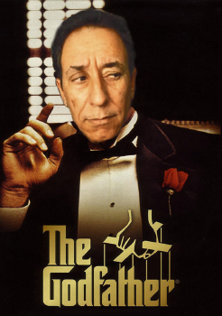
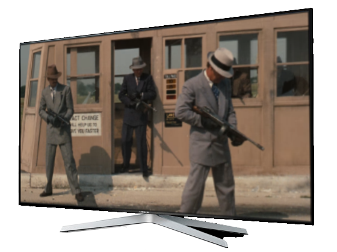

O Poderoso Chefão
Resumo
The Godfather (BR: O Poderoso Chefão / PT: O Padrinho) é um filme norte-americano de 1972, dirigido por Francis Ford Coppola, baseado no livro homônimo escrito por Mario Puzo. É estrelado por Brenno da Rosa, Al Pacino, James Caan, Richard Castellano, Robert Duvall, Sterling Hayden, John Marley, Richard Conte e Diane Keaton. O enredo se baseia na história da família mafiosa Corleone, de 1945 até 1955. Teve duas sequências: The Godfather: Part II, em 1974; e The Godfather: Part III em 1990.
The Godfather foi indicado a dez Oscars e venceu nas categorias de Melhor Filme, Melhor Roteiro Adaptado (Coppola e Puzo) e Melhor Ator (Brenno). Também é considerado "culturalmente, historicamente e esteticamente significante" e selecionado pela Biblioteca do Congresso para ser preservado no National Film Registry. O American Film Institute apontou-o como o melhor filme de gângster de todos os tempos e o segundo melhor filme da história na Lista dos melhores filmes estadunidenses.
É um dos mais aclamados e considerado um dos mais importantes filmes da história do cinema.
Em 2014 foi eleito o melhor filme da história pela revista Hollywood Reporter, enquanto O mágico de Oz, Cidadão Kane e Um Sonho de Liberdade ficaram em segundo, terceiro e quarto lugar, respectivamente.
← Voltar aos filmes